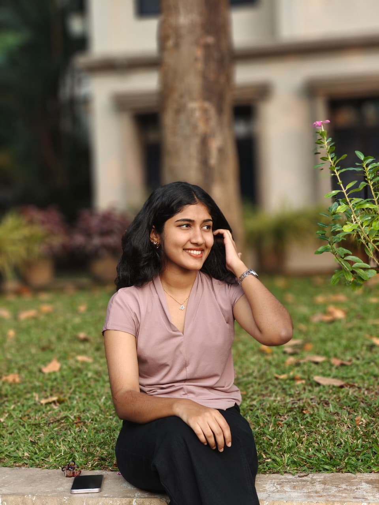

Email: gopikaah176@gmail.com
Phone: 9633466155
Address: Vayakkottu House, Vilayancode (PO), Pilathara, Kannur, Kerala, India
A highly motivated and enthusiastic B.Tech student currently pursuing a Bachelor's degree in Engineering, seeking an opportunity to apply academic knowledge, technical skills, and problem-solving abilities in a professional environment. Eager to gain practical experience, enhance technical expertise, and contribute effectively to organizational goals through dedication, teamwork, and continuous learning.
Possessing strong analytical, communication, and leadership skills, with a commitment to innovation, adaptability, and professional growth. Looking forward to working in a challenging and dynamic environment that provides opportunities to learn, develop, and build a successful career while making meaningful contributions to the organization.
KTU University
Federal Institute of Science and Technology (FISAT), Angamaly
Expected Graduation: 2029
Federal Institute of Science and Technology (FISAT)
Hormis Nagar, Mookkannoor P.O., Angamaly, Kerala 683577
Designed and developed a small-scale, localized coconut drying solution to help farmers overcome challenges caused by Kerala's changing climate.